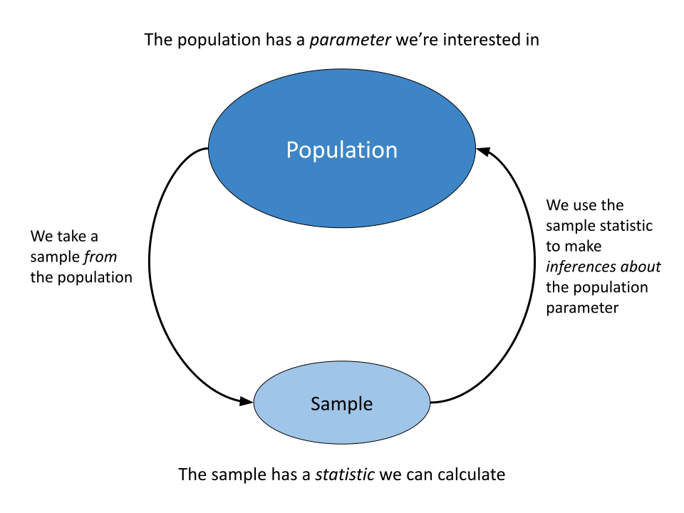
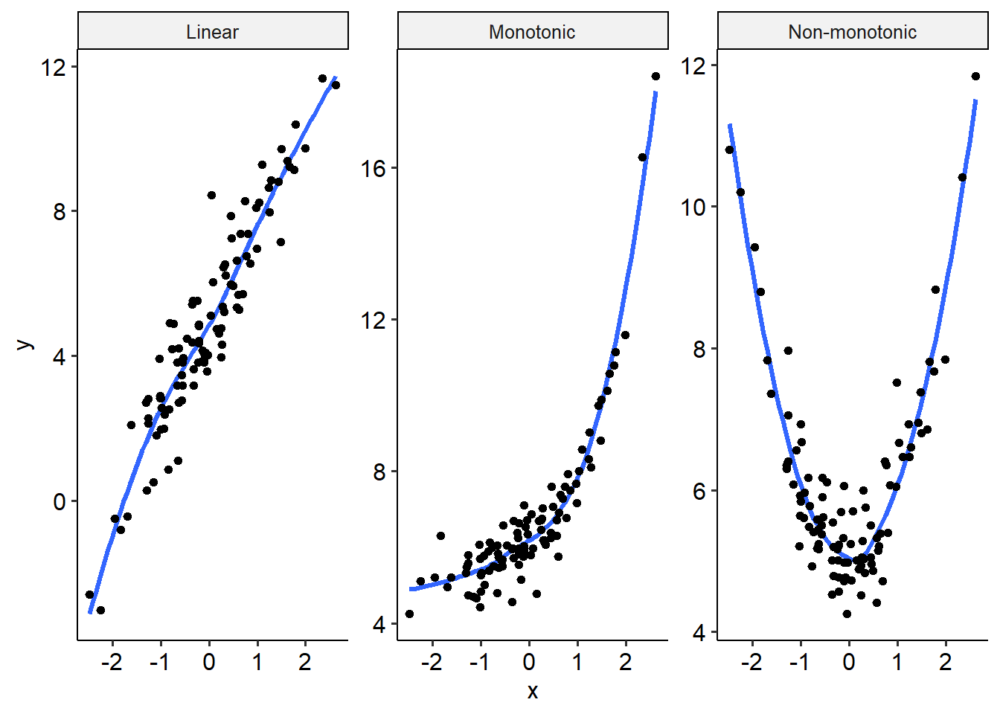
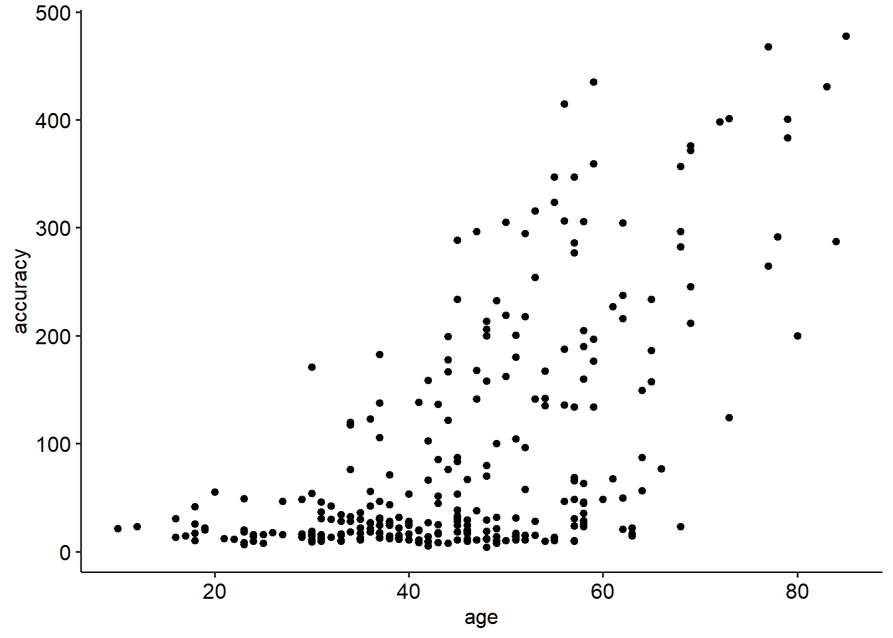
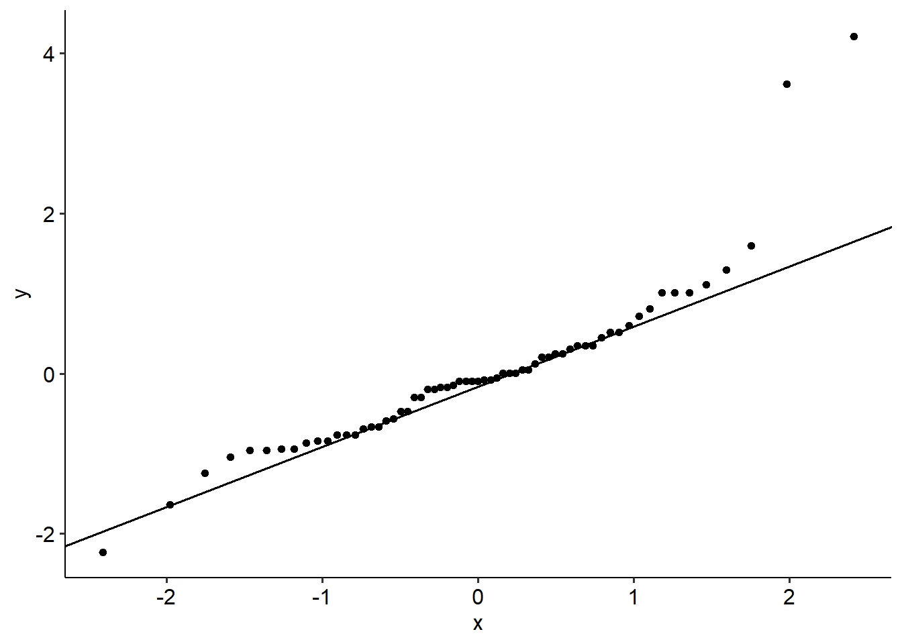

13 Non-parametric tests
13.1 Parametric vs non-parametric tests
13.1.1 Introduction
Recall the aim of much of the statistics we do:
When we estimate these parameters using statistical tests, we make certain assumptions about data in order for our tests to be valid. Many of those assumptions involve some degree of normality - whether the data/outcome needs to be normally distributed, or the residuals in the model need to be normally distributed. The tests that we cover in this subject - t-tests and ANOVAs especially - are called parametric tests, because they make an assumption about the distribution. But what happens if those assumptions aren’t met?
13.1.2 Non-parametric tests
Non-parametric tests do not make assumptions about the underlying distributions of data (and hence are sometimes called distribution-free tests). Instead, they are more general tests that make the following (broad) hypotheses:
- \(H_0\): The underlying distributions are equal
- \(H_1\): The underlying distributions are not equal
So when should they be used, and what are their pros and cons? In general, non-parametric tests should be considered when a) assumptions for parametric tests are not met and b) you are working with small samples. As noted below, with large samples a lot of the parametric assumptions in tests are fairly robust (unless deviations are particularly severe).
Below are the non-parametric equivalents to the major tests that we cover, with their associated datasets.
Note that chi-square tests are already non-parametric, while non-parametric regression is just a headache.
13.2 Spearman’s rho
13.2.1 Introduction
Spearman’s rho (\(\rho\)) is a non-parametric correlation coefficient, broadly equivalent in interpretation with Pearson’s correlation coefficient. It is used to calculate a correlation in instances where Pearson’s r would not be appropriate; namely, when data is not linear.
Spearman’s rho can be used when data is monotonic. Monotonic data is data where as X changes, Y changes in one direction. Below is a visualisation of monotonic versus non-monotonic data:

In the linear and monotonic examples, the line of best fit follows one direction - up. In the rightmost graph, however, there is a decrease and then an increase in the predicted values of y. This is an example of a non-monotonic function.
13.2.2 Understanding ranks
Non-parametric statistics, including all of the ones that we talk about in this module, rely on establishing ranks in your data. Mathematically, this is how non-parametric tests are able to test the hypotheses they do without needing to rely on accurately estimating some parameter, or making assumptions about said parameters. Although each test has a different way of using these ranks, many of them often start by calculating ranks in your data.
This is about as simple as it sounds. Consider the table below, with 5 measurements on a simple scale. The left column shows the raw data, while the middle column shows the ranked data - largest to smallest, reading top to bottom. The right column shows their ranks in order. The smallest value is given a rank of 1.
The ranks are then used to calculate test statistics for non-parametric tests.
13.2.3 Example
Below is a simple example of a correlation between two variables where non-linearity may be important. Singing accuracy is naturally skewed heavily, and develops non-linearly throughout life.
singing <- read_csv(here("data", "nonpara", "singing_data.csv"))Rows: 284 Columns: 2
── Column specification ────────────────────────────────────────────────────────
Delimiter: ","
dbl (2): accuracy, age
ℹ Use `spec()` to retrieve the full column specification for this data.
ℹ Specify the column types or set `show_col_types = FALSE` to quiet this message.The relevant dataset contains just two variables: accuracy (measured in cents) and age (participant age). The scatterplot below shows the relationship between these two variables:
singing %>%
ggplot(
aes(x = age, y = accuracy)
) +
ggpubr::theme_pubr() +
geom_point()
To calculate Spearman’s rho, the steps are much the same as the way they are for normal correlations - we use the same cor.test() function that we saw earlier. The main difference is that we now must specify the method argument to equal to "spearman", which will calculate Spearman’s rho instead.. Here, we see results consistent with a Pearson’s correlation; a significant, positive association between age and accuracy (\(\rho\) = .53, p < .001).
cor.test(singing$accuracy, singing$age, method = "spearman")Warning in cor.test.default(singing$accuracy, singing$age, method =
"spearman"): Cannot compute exact p-value with ties
Spearman's rank correlation rho
data: singing$accuracy and singing$age
S = 1808559, p-value < 2.2e-16
alternative hypothesis: true rho is not equal to 0
sample estimates:
rho
0.5262664 13.3 Mann-Whitney U tests
13.3.1 Introduction
A Mann-Whitney U (also called a Wilcoxon rank-sum test) is a non-parametric form of the independent samples t-test. In other words, it applies to situations where you are comparing two independent groups, and for whatever reason the assumptions of an independent t-test are severely violated.
Note that many statistics webpages erroneously call the Mann-Whitney U a test of medians; this is not necessarily true (and even the distribution point is a little strained). The test is simply on the ranks of the data.
13.3.2 Hypotheses
- \(H_0\): The probability distributions of the two groups is the same (i.e. they derive from the same distribution).
- \(H_1\): The probability distributions of the two groups are not the same (i.e. they derive from different distribution).
The test statistic is the U statistic. The U statistic ranges from 0 (which implies complete separation between the two groups) and n1 * n2 (the sample sizes of both groups multiplied).
13.3.3 Example
The dataset for this page and the next relate to young men’s wages in 1980 and 1987 across the United States. The original study was interested in the effects of union bargaining/membership on wages.
The following variables are in the dataset:
- nr: Participant ID
- year: year of measurement (1980 or 1987)
- school: Years of schooling
- exper: Years of work experience, calculated as school - 6
- union: Was their wage set by collective bargaining? (two levels: yes, no)
- ethn: Participant ethnicity (three levels: black, hisp, other)
- married; Marital status (two levels: yes, no)
- health: Does the participant have a health problem? (two levels: yes, no)
- wage: Hourly wage, log-transformed
- industry, occupation, residence: Demographic and descriptive variables
wages <- read_csv(here("data", "nonpara", "wages.csv"))Rows: 1090 Columns: 13
── Column specification ────────────────────────────────────────────────────────
Delimiter: ","
chr (7): union, ethn, married, health, industry, occupation, residence
dbl (6): ...1, nr, year, school, exper, wage
ℹ Use `spec()` to retrieve the full column specification for this data.
ℹ Specify the column types or set `show_col_types = FALSE` to quiet this message.Consider the following question: In 1980, were wages higher for union members than non-union members?
Let’s take a look at the data in R first. First, let’s filter our dataset so that we only have cases from 1980.
wages_1980 <- wages %>%
filter(year == 1980)Pretend that we run our assumption checks on the wage data and obtain the following:
wages_1980 %>%
group_by(union) %>%
shapiro_test(wage)# A tibble: 2 × 4
union variable statistic p
<chr> <chr> <dbl> <dbl>
1 no wage 0.932 1.14e-12
2 yes wage 0.976 1.81e- 2wages_1980 %>%
levene_test(wage ~ union, center = "mean")Warning in leveneTest.default(y = y, group = group, ...): group coerced to
factor.# A tibble: 1 × 4
df1 df2 statistic p
<int> <int> <dbl> <dbl>
1 1 543 11.0 0.000972Both assumptions have been violated. Now, pretend that we think this violation is bad enough that even a Welch test wouldn’t be appropriate. In this instance, we may turn to a Mann-Whitney U test.
13.3.4 Output
TO run a Mann-Whitney U test, we use the wilcox.test() function in R. The wilcox.test() function behaves just like the regular t.test() function for both independent and paired-samples t-tests, down to the same notation. So, we can use the same notation for a independent-samples t-test as we have done so in the past:
wilcox.test(wage ~ union, data = wages_1980)
Wilcoxon rank sum test with continuity correction
data: wage by union
W = 19767, p-value = 2.898e-07
alternative hypothesis: true location shift is not equal to 0Here is our output above. We can see that the p-value is significant, and so therefore these two samples (union vs non-union) do not appear to come from the same underlying distribution (Mann-Whitney U = 19767, p < .001). We can then use descriptives as per normal to figure out where the difference is (the median and mean wages for union members are higher than non-members).
We also want to calculate our effect size for this test, called the rank biserial correlation. We won’t worry too much about the maths here, but we can broadly interpret this along similar lines to Pearson’s r (weak to medium in this instance). To do this, we can use the rank_biserial() function in the effectsize package, which works like its cohens_d() counterpart:
rank_biserial(wage ~ union, data = wages_1980)r (rank biserial) | 95% CI
----------------------------------
-0.29 | [-0.39, -0.19]Something to note, though, is that unlike the standard t-test, how exactly this result should be interpreted is a little more vague. With a regular t-test, we test differences between two group means, and thus we can directly make a comparison between means when interpreting a test. In this instance, however, we are testing differences in ranks; this doesn’t have a clean interpretation beyond there just being a difference (of sorts) between the groups.
13.4 Wilcoxon signed rank test
13.4.1 Introduction
The non-parametric equivalent to the paired-samples t-test is the Wilcoxon signed-rank test. The sign and rank part of the test’s name comes from how the test statistic is calculated. We won’t deal too much with the mechanics of doing this, but it involves three main steps:
- Calculate the difference between condition 1 and condition 2
- Rank each difference based on its absolute value (i.e. disregard whether it is positive/negative)
- Add up each set of signed differences (i.e. add all the positive differences together, and add all the negative ones together). The test statistic is the minimum of the two.
In essence, the maths is exactly the same as a regular paired-samples t-test (i.e. it is a one-sample test on the differences between groups), but just using ranks this time rather than means. The Wilcoxon signed-rank test can be used to test whether the medians differ between the two conditions (i.e. it’s appropriate to hypothesise this here). Like the other non-parametric tests, it is a test that is free from assumptions about distributions.
13.4.2 Example
In the wages dataset, there are wages between 1980 and 1987. Did the median wage change between these two years? Here are our descriptives:
wages_wide <- wages %>%
select(nr, year, wage) %>%
pivot_wider(
id_cols = nr,
names_from = year,
values_from = wage,
names_prefix = "wage_"
)Recall that in a paired-samples t-test, the normality assumption refers to whether the differences between the two conditions are normally distributed. We can test this in the usual two ways: 1) with a normality significance test, and 2) by assessing a Q-Q plot. Here is the former, to show what a non-normal dataset might look like:
shapiro.test(wages_wide$wage_1980 - wages_wide$wage_1987)
Shapiro-Wilk normality test
data: wages_wide$wage_1980 - wages_wide$wage_1987
W = 0.88454, p-value < 2.2e-16As we can see, the test is significant (Shapiro-Wilks’ W = .885, p < .001) - naturally, a tell-tale sign that this data aren’t normally distributed. This would be a good example to use Wilcoxon signed-rank tests over a regular paired t-test.
13.4.3 Output
The setup for a signed-rank test in R again uses the same syntax as the regular t.test() function for a paired test - meaning that we can either give it the two separate columns with paired = TRUE, or use Pairs(a, b) ~ 1 notation. For simplicity we’ll just do the former:
wilcox.test(wages_wide$wage_1980, wages_wide$wage_1987, paired = TRUE)
Wilcoxon signed rank test with continuity correction
data: wages_wide$wage_1980 and wages_wide$wage_1987
V = 15096, p-value < 2.2e-16
alternative hypothesis: true location shift is not equal to 0As mentioned on the previous page, we can also use our rank_biserial() function the same way to calculate an effect size for this paired test:
rank_biserial(wages_wide$wage_1980, wages_wide$wage_1987, paired = TRUE)r (rank biserial) | 95% CI
----------------------------------
-0.80 | [-0.83, -0.76]Here is our output. Our test is clearly significant, so we can reject the null and say that wages in 1987 were higher than wages in 1980 (W = 15096, p < .001). Our effect size is also large this time (and negative, indicating that wages were higher in 1987 than 1980).
13.5 Kruskal-Wallis ANOVA
13.5.1 Introduction
The Kruskal-Wallis ANOVA is the non-parametric equivalent of the basic one-way ANOVA. It is essentially an extension of the Mann-Whitney U test, which has a couple of important ramifications: namely, it doesn’t assume any underlying distributions.
Like the Mann-Whitney U test, by default the Kruskal-Wallis ANOVA is purely a test of whether the data in each group come from the same underlying distributions. The KW ANOVA can only test for a difference in medians if you can assume that each group’s distribution is the same shape and spread (e.g. all groups are skewed in the same way). Otherwise, you are essentially testing for a difference in the underlying distributions.
13.5.2 Example scenario
The example data for this page and the next come from one data source, looking at language abilities in young children. These datasets contain the same participants, but the file labelled “autism_kw” takes data at one cross-section while the “autism_friedman” file contains four timepoints.
The variables in this dataset include:
- childid: Participant ID
- sicdegp: Assessment of expressive language development. Three groups: high, medium, low.
- age2: Participant’s age, centered around 2 years old. The numeric values indicate how many years have passed since the child was 2 years old.
In the "autism_friedman" dataset, the columns are labelled age_0, age_1, age_3 and age_7. These refer to the ages of 2 years old, 2yo, 5yo and 9yo respectively.- vsae: Vineland Socialisation Age Equivalent
- gender, race: Participant’s gender and race
- bestest2 - Diagnosis at age 2. Two levels: autism and PDD (pervasive developmental disorder).
We will take a look at the first autism dataset (“autism_kw”). In this dataset, we want to conduct an ANOVA comparing socialisation age equivalents (VSAE) between children with varying levels of expressive language development.
autism <- read_csv(here("data", "nonpara", "autism_long.csv")) %>%
mutate(
sicdegp = factor(sicdegp)
)Rows: 63 Columns: 7
── Column specification ────────────────────────────────────────────────────────
Delimiter: ","
chr (4): sicdegp, gender, race, bestest2
dbl (3): childid, age2, vsae
ℹ Use `spec()` to retrieve the full column specification for this data.
ℹ Specify the column types or set `show_col_types = FALSE` to quiet this message.13.5.3 Checking assumptions (normal ANOVA)
Here’s what a regular ANOVA would look like on this data - specifically, the assumption checks. We can see that both assumptions are violated; Levene’s test is significant (F(2, 60) = 4.57, p =. 014), and the Shaprio-Wilks test is too (backed up by a funky looking Q-Q plot; W = .86, p < .001).
autism_aov <- aov(vsae ~ sicdegp, data = autism)# levene's test
autism %>%
levene_test(vsae ~ sicdegp, center = "mean")# A tibble: 1 × 4
df1 df2 statistic p
<int> <int> <dbl> <dbl>
1 2 60 4.57 0.0142# Shapiro-wilks
shapiro.test(autism_aov$residuals)
Shapiro-Wilk normality test
data: autism_aov$residuals
W = 0.86118, p-value = 4.232e-06autism_aov %>%
broom::augment() %>%
ggplot(
aes(sample = .std.resid)
) +
geom_qq() +
geom_qq_line() +
ggpubr::theme_pubr()Warning: The `augment()` method for objects of class `aov` is not maintained by the broom team, and is only supported through the `lm` tidier method. Please be cautious in interpreting and reporting broom output.
This warning is displayed once per session.
Now, these aren’t too bad in general, but let’s assume for the sake of practice that these violations are severe enough that we would consider using non-parametrics instead.
13.5.4 Output
To conduct a Kruskal-Wallis ANOVA in R, we can use the kruskal.test() function. This function works very similarly to aov(), meaning that we can provide the same notation as we normally would:
autism_kw <- kruskal.test(vsae ~ sicdegp, data = autism)
autism_kw
Kruskal-Wallis rank sum test
data: vsae by sicdegp
Kruskal-Wallis chi-squared = 28.474, df = 2, p-value = 6.562e-07Note here that the test statistic in a Kruskal-Wallis is a chi-square distribution, with a df of g - 1 (where g = number of groups). This is sometimes called H, but is mathematically equivalent to the chi-square we are familiar with. Our overall result is significant (\(\chi^2\)(2) = 28.47, p < .001).
The same notation is used for calculating effect sizes, using the rank_epsilon_squared() function from effectsize:
rank_epsilon_squared(vsae ~ sicdegp, data = autism)Epsilon2 (rank) | 95% CI
------------------------------
0.46 | [0.35, 1.00]
- One-sided CIs: upper bound fixed at [1.00].Here, our non-parametric effect size is epsilon squared, \(\epsilon^2\). It is not commonly seen so can be hard to interpret, but people have made various guidelines of their own.
Jamovi uses Dwass-Steel-Critchlow-Fligner tests (phew!), or simply DCSF tests, for ‘post hoc’ pairwise comparisons. We’ll use the same here for compatibility with Jamovi. The only thing you really need to know about these comparisons is that they have an in-built correction for the family-wise error rate, so do not need adjusting after the analyses have been run.
To run these tests, we need a new package called PMCMRplus. Within this package is a function called dscfAllPairsTest(), which will give us the p-values for each pairwise comparison. The required code is exactly the same as we have used above:
PMCMRplus::dscfAllPairsTest(vsae ~ sicdegp, data = autism)
Pairwise comparisons using Dwass-Steele-Critchlow-Fligner all-pairs testdata: vsae by sicdegp high low
low 5.4e-06 -
med 0.0002 0.0635
P value adjustment method: single-stepWe can see that there is a significant difference in socialisation age between children with high versus low expressive language (p < .001), as well as between children with high versus medium expressive language (p < .001). However, there is no significant difference in socialisation age between children with low and medium expressive language (p = .064).
13.6 Friedman ANOVAs
13.6.1 Introduction
The Friedman ANOVA (or Friedman test) is the non-parametric equivalent of a one-way repeated measures ANOVA. The idea behind the Friedman’s ANOVA is the same as its parametric counterpart, namely to test whether there are differences in treatments across multiple time points.
13.6.2 Example scenario
We will take a look at the autism dataset again, albeit with a new version called autism_wide.csv. In this scenario, we now want to see how expressive language changes over time. Note that the variables relating to age are referenced/centered to 2 years old. That is, a value of age2 of 0 indicates the child is 2 years old; a value of 1 refers to 3 years old and a value of 3 refers to 5 years old.
autism_wide <- read_csv(here("data", "nonpara", "autism_wide.csv"))Rows: 63 Columns: 9
── Column specification ────────────────────────────────────────────────────────
Delimiter: ","
chr (4): sicdegp, gender, race, bestest2
dbl (5): childid, age_0, age_1, age_3, age_7
ℹ Use `spec()` to retrieve the full column specification for this data.
ℹ Specify the column types or set `show_col_types = FALSE` to quiet this message.# Reshape into long format
autism <- autism_wide %>%
pivot_longer(
cols = age_0:age_7,
names_to = "age2",
values_to = "vsae",
names_prefix = "age_"
) %>%
mutate(
age2 = factor(age2)
)13.6.3 Checking assumptions (normal ANOVA)
Like last time, let’s examine our assumptions using a normal repeated-measures ANOVA. We can see that our sphericity assumption is violated (p < .001), and very severely so; recall that the W statistic in Mauchly’s test is a deviation from 1, so our test statistic of W = .047 is very low! This might be one instance where we would legitimately consider running a Friedman ANOVA, if we weren’t keen on applying such a strong Greenhouse-Geisser correction to our ANOVA.
autism %>%
anova_test(dv = vsae, within = age2, wid = childid)ANOVA Table (type III tests)
$ANOVA
Effect DFn DFd F p p<.05 ges
1 age2 3 186 48.401 3.62e-23 * 0.286
$`Mauchly's Test for Sphericity`
Effect W p p<.05
1 age2 0.047 4.88e-38 *
$`Sphericity Corrections`
Effect GGe DF[GG] p[GG] p[GG]<.05 HFe DF[HF] p[HF]
1 age2 0.434 1.3, 80.71 2.02e-11 * 0.439 1.32, 81.73 1.55e-11
p[HF]<.05
1 *13.6.4 Running a Friedman ANOVA
Friedman ANOVAs are available in R with the friedman.test() function. This function requires long data, and by and large even uses the same formula notation that we are used to. The only difference is that because this is repeated measures data, we must tweak the formula slightly to account for this. The formula needs to take outcome ~ predictor | id notation, where id needs to point to a column in the dataset that simply indicates each participant’s unique ID. Otherwise, the formula is much as you would expect:
friedman.test(vsae ~ age2 | childid, data = autism)
Friedman rank sum test
data: vsae and age2 and childid
Friedman chi-squared = 133.51, df = 3, p-value < 2.2e-16Also like the Kruskal-Wallis ANOVA, R will report a chi-square as the test statistic. This is for the same reason as before; the actual test statistic Q approximates a chi-square distribution with large enough samples (e.g. n > 15). We can see that our omnibus result is significant (\(\chi^2\)(3) = 133.51, p < .001).
Although Jamovi does not give an effect size for a Friedman ANOVA, there actually is one called Kendall’s W. The effectsize package provides a function called - you guessed it - kendalls_w() to calculate this. The notation is the same as friedman.test().
kendalls_w(vsae ~ age2 | childid, data = autism)Warning: 9 block(s) contain ties.Kendall's W | 95% CI
--------------------------
0.71 | [0.59, 1.00]
- One-sided CIs: upper bound fixed at [1.00].Of course, we still need to do post-hoc pairwise comparisons. The post-hocs that Jamovi provides are called Durbin-Conover pairwise comparisons, which are simply called Durbin tests elsewhere. The PMCMRplus package we mentioned earlier provides a function called durbinAllPairsTest() to conduct these posthocs. Note that although the function can be run without assigning the output to a new object, this will only give p-values; to get the proper output, we will want to assign the function’s output to a variable and then run summary() on this.
This function will also allow you to use p-value adjustment methods. Holm adjusted p values are the default, which we will run with.
autism_posthoc <- PMCMRplus::durbinAllPairsTest(y = autism$vsae, groups = autism$age2, blocks = autism$childid)
summary(autism_posthoc)
Pairwise comparisons using Durbin's all-pairs test for a two-way balanced incomplete block designdata: autism$vsae, autism$age2 and autism$childidP value adjustment method: holmH0 t value Pr(>|t|)
1 - 0 == 0 7.317 2.2075e-11 ***
3 - 0 == 0 14.189 < 2.22e-16 ***
7 - 0 == 0 19.979 < 2.22e-16 ***
3 - 1 == 0 6.872 1.8542e-10 ***
7 - 1 == 0 12.662 < 2.22e-16 ***
7 - 3 == 0 5.790 2.9470e-08 ***---Signif. codes: 0 '***' 0.001 '**' 0.01 '*' 0.05 '.' 0.1 ' ' 1The left column of this output is denoting a specific hypothesis being tested. For example, “1 - 0 == 0” means that it is testing whether the difference between age2 = 1 and age2 = 0 is equal to 0. The corresponding columns to the right give the test statistic and the p-value.
Based on our results, we can see that all comparisons are significant (p < .001). To interpret this, the most useful way would be to draw a plot and go back to the main descriptives, to infer that there is a significant increase or decrease in expressive language with age.